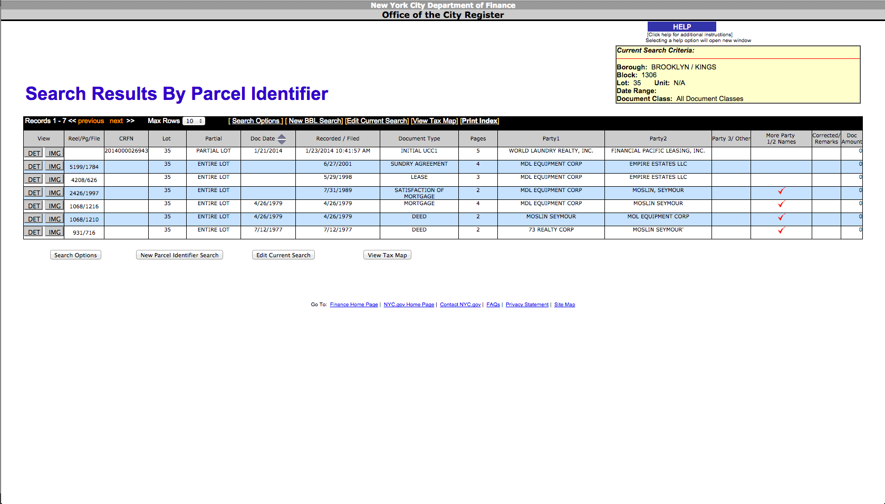

MFA DT
Thesis Proposal
Chris Henrick
Background
1.
Domains
Critical Cartography:
New mapping practices that use cartography’s subjectivity and bias in an explicit fashion to create maps that are non-normative.
Counter Mapping:
Using the mapping process “to contest dominant power structures [in order to] further seemingly progressive goals.”
Critical GIS:
Acknowledging bias in geospatial data as well as in the processes of manipulating it.
Civic Tech:
Using technology and open data to create transparency in local government and promoting civic engagement among the public.
2.
The Issue
Affordable Housing and Development & Displacement in New York City.
3.
Research
problem:
People are not aware of city processes & developers are too powerful.
Q: How can technology and open data be leveraged to combat the negative effects of hyper gentrification? Specifically displacement?
4.
Action
"Talk is cheap. So are pixels and kilobytes. Influence and effect comes with practice. And practices. We are our productions -- cartographic, academic, capitalistic. To shy from action for fear of false steps is to fail"- Matthew W. Wilson
Design and Technology as a social practice
Problem:
Access to public information on NYC properties

Solution:
Web Scraping
Q:
How to make this data more accessible?
problem:
Would this actually be useful for community orgs and citizens?
Perhaps pulling out the relevant parts of the data?
But is this useful?
solution:
Am-I-Rent-Stabilized.com
To draw attention to lack of affordable housing and how property owners are removing them illegally
Proposal
Utilizing open government data for narrative & civic action.
end.